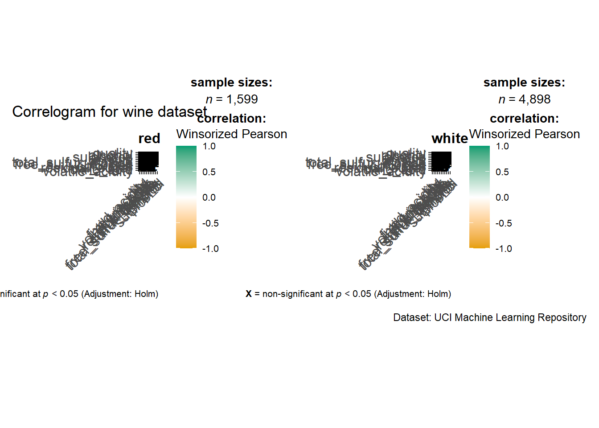
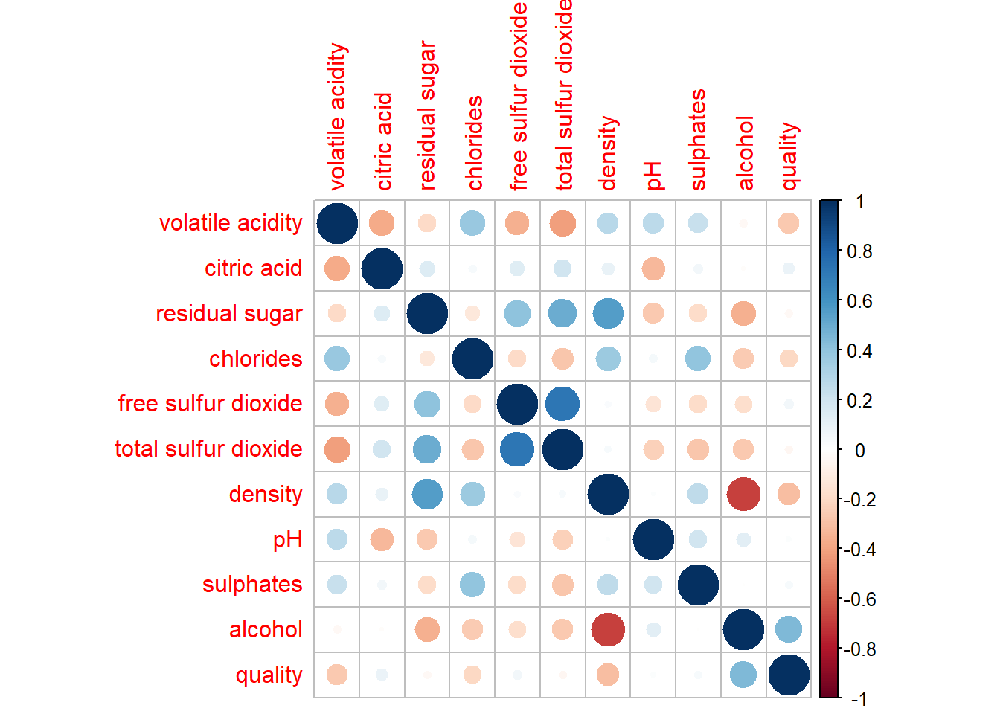
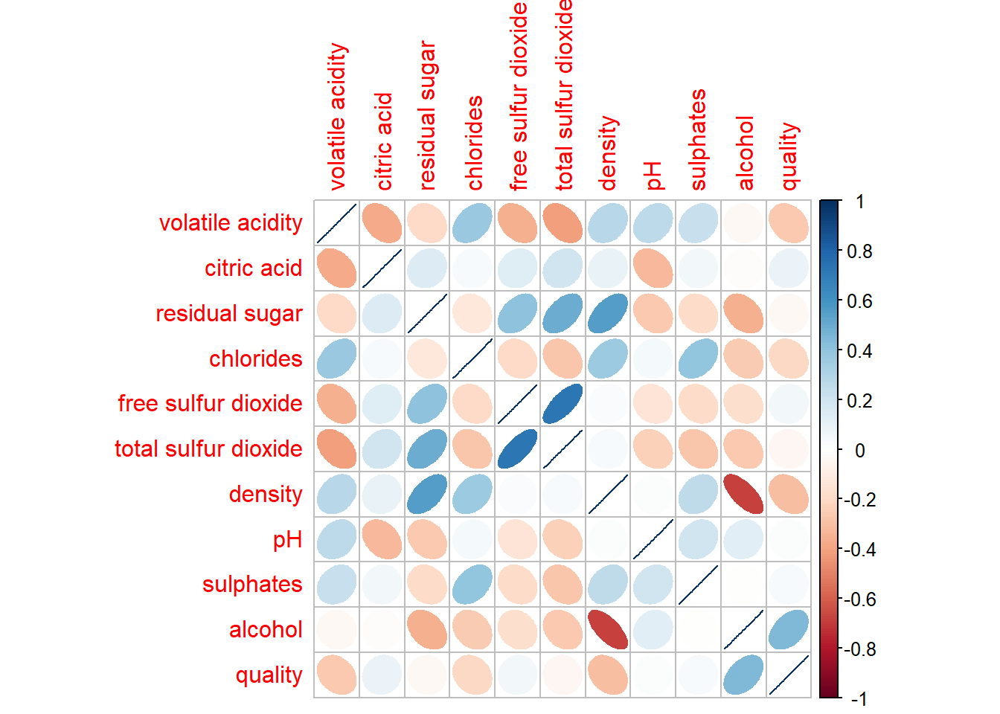
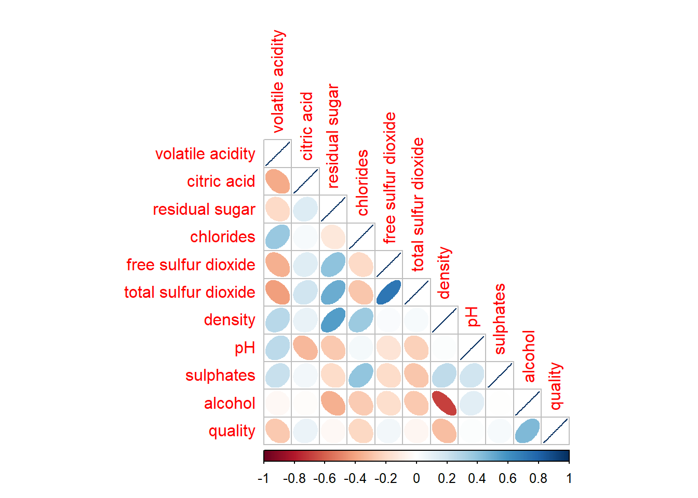
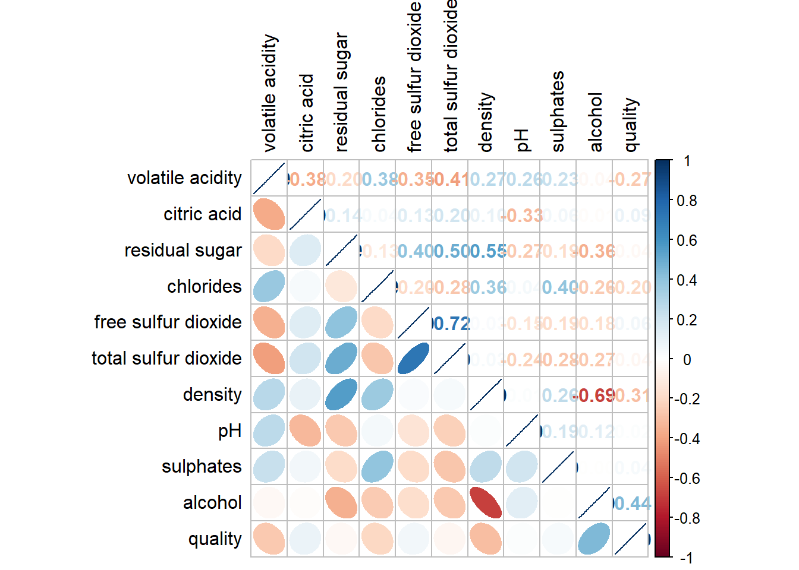
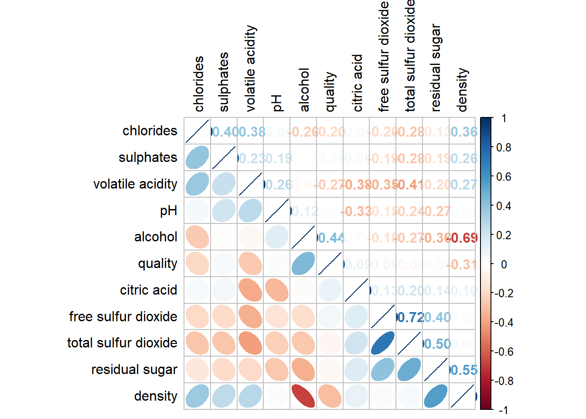
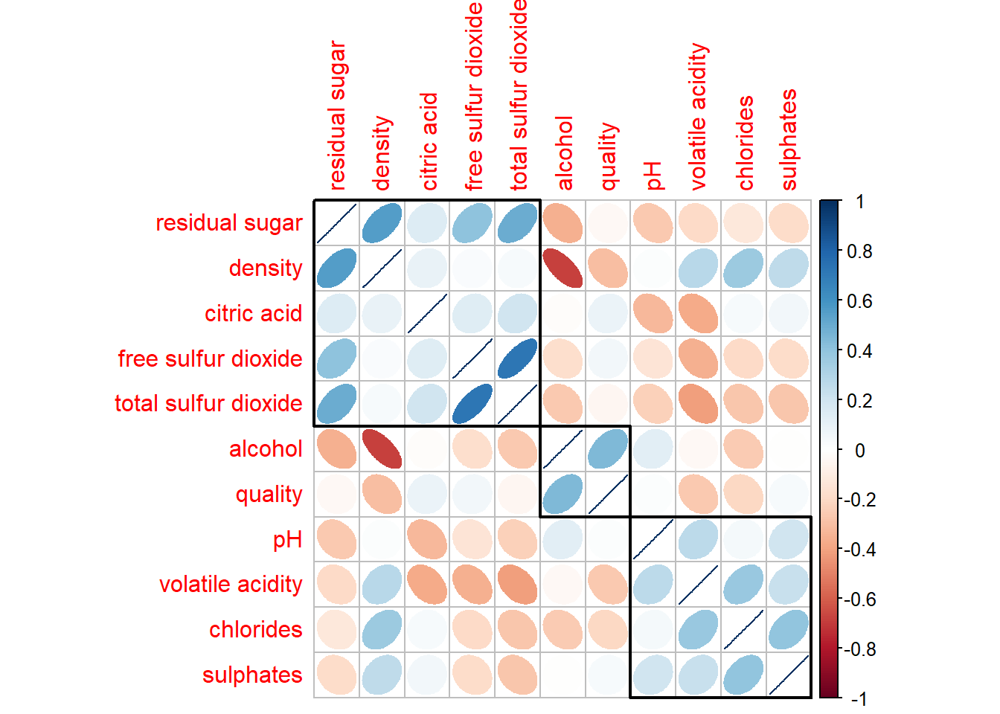

pacman::p_load(corrplot, ggstatsplot, tidyverse)Hands-on Exercise 06: Visual Correlation Analysis
1 6.1 Overview
Correlation coefficient measures the strength and direction of a linear relationship between two variables (range -1 to 1).
In this hands-on, we will:
- build correlation matrix and scatterplot matrix using base
pairs(), - enhance the matrix by adding correlation coefficients,
- visualise correlations using ggcorrmat (ggstatsplot) and corrplot,
- explore layouts (lower/upper/mixed) + significance test + reordering.
2 6.2 Installing and launching R packages
3 6.3 Importing and preparing the data set
We use the Wine Quality dataset (CSV in data/ folder).
wine <- read_csv("../data/wine_quality.csv")
glimpse(wine)Rows: 6,497
Columns: 13
$ `fixed acidity` <dbl> 7.4, 7.8, 7.8, 11.2, 7.4, 7.4, 7.9, 7.3, 7.8, 7…
$ `volatile acidity` <dbl> 0.700, 0.880, 0.760, 0.280, 0.700, 0.660, 0.600…
$ `citric acid` <dbl> 0.00, 0.00, 0.04, 0.56, 0.00, 0.00, 0.06, 0.00,…
$ `residual sugar` <dbl> 1.9, 2.6, 2.3, 1.9, 1.9, 1.8, 1.6, 1.2, 2.0, 6.…
$ chlorides <dbl> 0.076, 0.098, 0.092, 0.075, 0.076, 0.075, 0.069…
$ `free sulfur dioxide` <dbl> 11, 25, 15, 17, 11, 13, 15, 15, 9, 17, 15, 17, …
$ `total sulfur dioxide` <dbl> 34, 67, 54, 60, 34, 40, 59, 21, 18, 102, 65, 10…
$ density <dbl> 0.9978, 0.9968, 0.9970, 0.9980, 0.9978, 0.9978,…
$ pH <dbl> 3.51, 3.20, 3.26, 3.16, 3.51, 3.51, 3.30, 3.39,…
$ sulphates <dbl> 0.56, 0.68, 0.65, 0.58, 0.56, 0.56, 0.46, 0.47,…
$ alcohol <dbl> 9.4, 9.8, 9.8, 9.8, 9.4, 9.4, 9.4, 10.0, 9.5, 1…
$ quality <dbl> 5, 5, 5, 6, 5, 5, 5, 7, 7, 5, 5, 5, 5, 5, 5, 5,…
$ type <chr> "red", "red", "red", "red", "red", "red", "red"…For correlation matrix, we focus on the numeric columns (usually columns 2 to 12).
wine_num <- wine[, 2:12]4 6.4 Building the correlation matrix: pairs()
4.1 6.4.1 Basic scatterplot matrix
pairs(wine_num)
4.2 6.4.2 Drawing only one triangle (lower / upper)
Lower triangle only:
pairs(wine_num, upper.panel = NULL)
Upper triangle only:
pairs(wine_num, lower.panel = NULL)
4.3 6.4.3 Add correlation coefficients
We replace one panel with a correlation-number panel.
panel.cor <- function(x, y, digits = 2, prefix = "", cex.cor, ...) {
usr <- par("usr"); on.exit(par(usr))
par(usr = c(0, 1, 0, 1))
r <- abs(cor(x, y, use = "complete.obs"))
txt <- format(c(r, 0.123456789), digits = digits)[1]
txt <- paste0(prefix, txt)
if (missing(cex.cor)) cex.cor <- 0.8 / strwidth(txt)
text(0.5, 0.5, txt, cex = cex.cor * (1 + r) / 2)
}
pairs(wine_num, upper.panel = panel.cor)
5 6.5 Visualising correlation matrix: ggcorrmat()
A clean, publication-style correlation plot.
ggstatsplot::ggcorrmat(
data = wine,
cor.vars = 1:11, # adjust if your dataset has different columns
ggcorrplot.args = list(outline.color = "black"),
hc.order = TRUE,
tl.cex = 10,
title = "Correlogram for wine dataset",
subtitle = "Pearson correlation (x = non-significant at p < 0.05; Holm adjustment)"
)
5.1 6.6 Building multiple plots (faceting by a group)
If you have a group variable like type (red/white), you can facet the correlogram.
wine <- wine %>%
janitor::clean_names() %>%
mutate(type = as.factor(type))
num_vars <- wine %>% select(where(is.numeric)) %>% names()
stopifnot(length(num_vars) >= 2)
wine_corr <- wine %>% select(type, all_of(num_vars))
ggstatsplot::grouped_ggcorrmat(
data = wine_corr,
cor.vars = num_vars,
grouping.var = type, # ✅ 注意这里！！
type = "robust",
p.adjust.method = "holm",
plotgrid.args = list(ncol = 2),
ggcorrplot.args = list(outline.color = "black"),
hc.order = TRUE,
tl.cex = 10,
annotation.args = list(
title = "Correlogram for wine dataset",
caption = "Dataset: UCI Machine Learning Repository"
)
)
6 6.7 Visualising correlation matrix using corrplot
6.1 6.7.1 Getting started
wine_cor <- cor(wine_num, use = "complete.obs")
corrplot(wine_cor)
6.2 6.7.2 Visual geometries (ellipse)
corrplot(wine_cor, method = "ellipse")
6.3 6.7.3 Working with layout (lower)
corrplot(wine_cor, method = "ellipse", type = "lower")
You can customize diagonal and text color:
corrplot(wine_cor, method = "ellipse", type = "lower",
diag = FALSE, tl.col = "black")
6.4 6.7.4 Mixed layout (numbers + shapes)
corrplot.mixed(wine_cor,
lower = "ellipse",
upper = "number",
tl.pos = "lt",
diag = "l",
tl.col = "black")
6.5 6.7.5 Combine corrgram with significance test
Compute p-values using cor.test() pairwise, then pass into corrplot() via p.mat.
cor.mtest <- function(mat, conf.level = 0.95) {
mat <- as.matrix(mat)
n <- ncol(mat)
p.mat <- matrix(NA, n, n)
diag(p.mat) <- 0
for (i in 1:(n - 1)) {
for (j in (i + 1):n) {
tmp <- cor.test(mat[, i], mat[, j], conf.level = conf.level)
p.mat[i, j] <- p.mat[j, i] <- tmp$p.value
}
}
colnames(p.mat) <- rownames(p.mat) <- colnames(mat)
p.mat
}
wine_sig <- cor.mtest(wine_num)
corrplot(wine_cor,
method = "number",
type = "lower",
diag = FALSE,
tl.col = "black",
tl.srt = 45,
p.mat = wine_sig,
sig.level = 0.05)
6.6 6.7.6 Reorder a corrgram
corrplot.mixed(wine_cor,
lower = "ellipse",
upper = "number",
tl.pos = "lt",
diag = "l",
order = "AOE",
tl.col = "black")
6.7 6.7.7 Reordering using hierarchical clustering (hclust)
corrplot(wine_cor,
method = "ellipse",
tl.pos = "lt",
order = "hclust",
hclust.method = "ward.D",
addrect = 3)
7 Notes / Tips
- If your dataset has missing values, use
use = "complete.obs"incor(). - Always sanity-check: correlation ≠ causation.